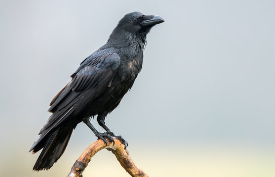

Bugs are often overlooked in the animal kingdom, but they play an essential role in maintaining ecosystems. Insects like beetles, butterflies, and ants serve as pollinators, decomposers, and even pest controllers. Without them, life on Earth would be radically different, and likely far less diverse. For instance, bees alone are responsible for the pollination of a significant portion of crops we consume daily. Such as corn, tomatoes, pumpkins, and much more, bugs are a large reason why they are able to thrive.
Beyond their utility, bugs are fascinating in their behavior and biology. Did you know that dragonflies can move each of their four wings independently? Or that ants form complex social systems with distinct roles for workers, soldiers, and queens? Some insects even use tools or mimic other creatures to avoid predators. Many bugs also possess unique ways to communicate, such as fireflies that flash light patterns to attract mates or warn about enemies.
Another captivating fact is that some bugs have been on Earth for over 300 million years, adapting through mass extinctions and climate changes. Their resilience and diversity are some of the greatest found amoung the animal kingdom. Appreciating bugs means appreciating the very foundation of many natural processes that sustain life.
Common Bugs and Their Roles
Bug
Role
Habitat
Bee
Pollinator
Gardens, Meadows
Ant
Decomposer
Soil, Forest Floors
Ladybug
Pest Control
Leaves, Fields
Crows: The Brainy Birds
Author: Sam Clara |

Crows are among the most intelligent birds on the planet, with problem-solving skills that rival even some primates. Part of the corvid family, crows are capable of using tools, recognizing human faces, and even holding grudges. Their intelligence isn’t just instinctual; it’s learned and passed down through generations. This ability makes them fascinating to researchers and bird lovers alike. Some crows have even been observed playing in the wild through means of sliding down snowy rooftops and others.
One remarkable aspect of crows is their use of complex communication. They have different calls for warning others about specific types of danger, and some studies suggest they can even share information about where to find food. Additionally, crows are known to engage in the act of teaching, showing others crows a various means of survival such as dropping a nut on a busy road to break it. Such behavior indicates a level of awareness not commonly associated with birds.
They also display signs of empathy and mourning, gathering quietly around dead crows in what looks like a ritual. Observing crow behavior challenges many of our assumptions about the mental capabilities of animals. These birds thrive in both urban and wild settings, adapting quickly to human activity and often using it to their advantage. Their ability to remember safe places and even gift humans with small tokens shows an emotional complexity that continues to surprise scientists. Clearly, crows are far more than just black birds in the sky—they are thinkers, planners, and survivors. So next time you see a murder of crows in the wild, maybe take a little time to appritate them.